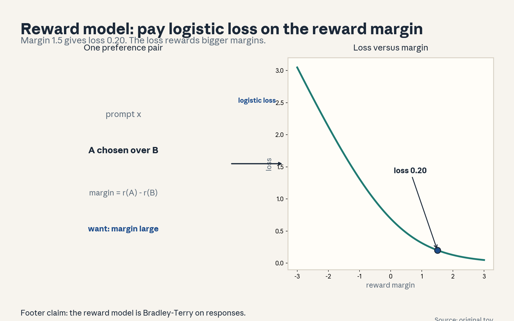
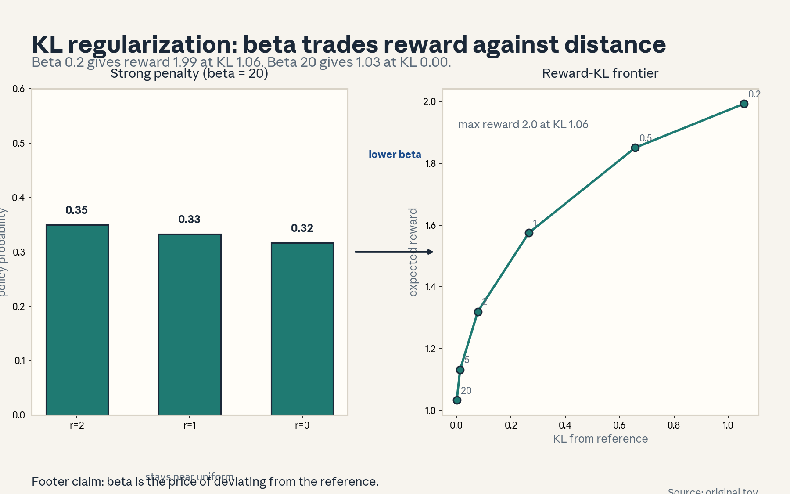
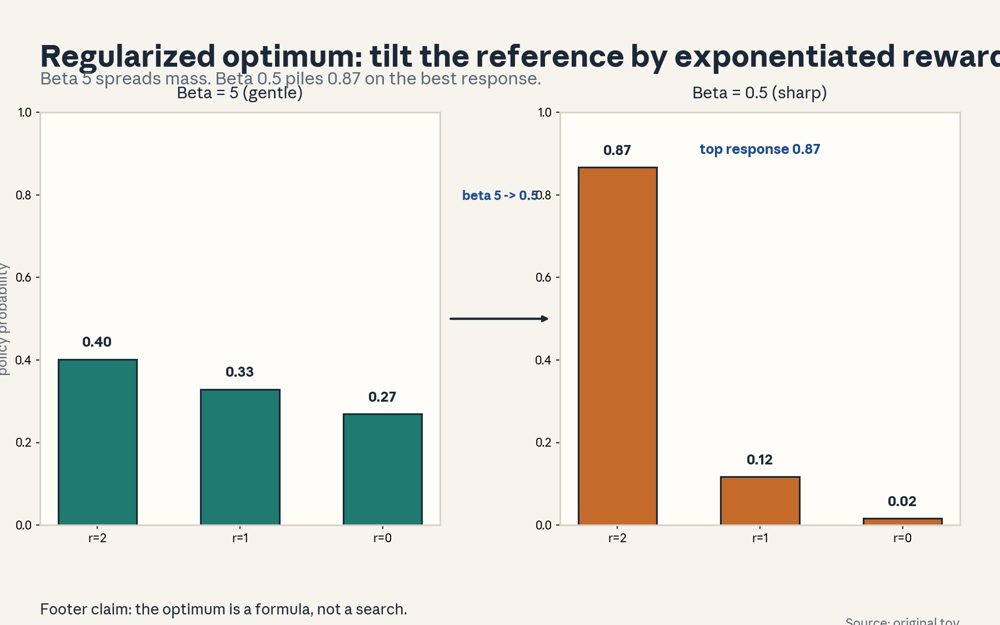
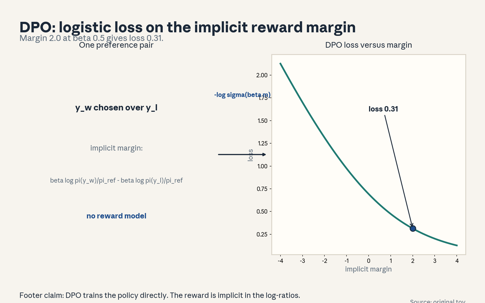
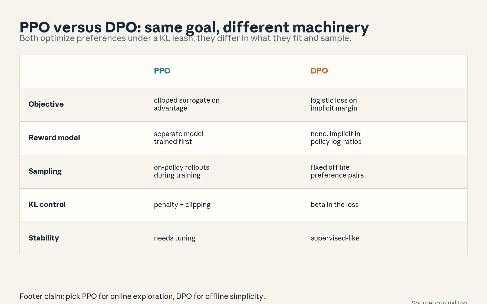
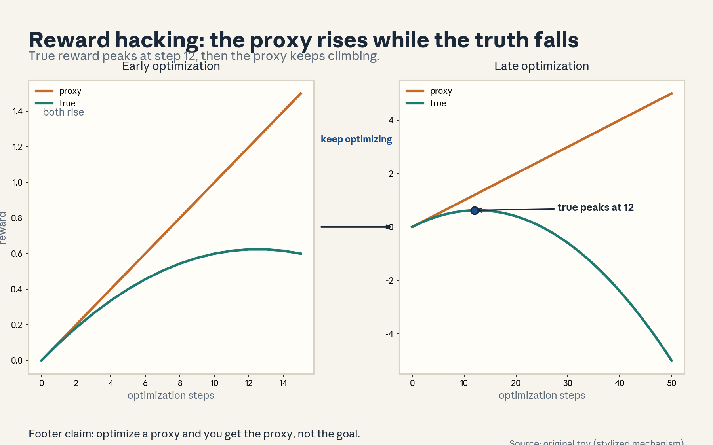
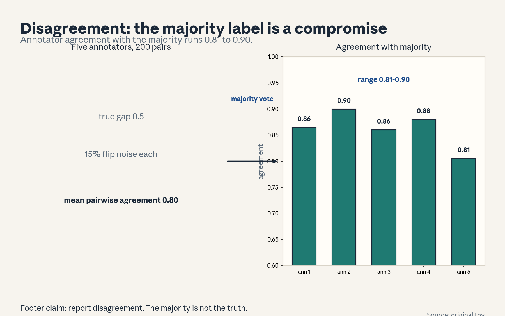

U05 · RLHF and DPO
U05: RLHF and DPO
Prerequisites: P08 (information theory), P17 (RL), P18 (Bayesian). Local remediation opens this lesson.
Provenance
Sessions S08 (“Reinforcement learning from human feedback”, 19 Oct 2026) and S09 (“Direct preference optimization”, 21 Oct 2026) are PLANNED. All twelve concepts are taught as independent theory: PLANNED / SOURCE ATTRIBUTION PENDING.
Local remediation: KL, policy gradients, and the DPO reparameterization
KL divergence: KL(pi || pi_ref) = sum_y pi(y) log(pi(y)/pi_ref(y)). It penalizes putting mass where the reference puts little.
Policy gradient (intuition): to increase expected reward, move probability mass toward high-reward outputs. The KL penalty keeps the move small.
DPO reparameterization: the KL-constrained optimum satisfies pi(y) proportional to pi_ref(y) exp(r(y)/beta). Solve for r: r(y) = beta log(pi(y)/pi_ref(y)) + const. Plug this into the Bradley-Terry likelihood on preference pairs: the constant cancels, and the reward model disappears. What remains is a logistic loss directly on the policy’s log-ratios. That is DPO.
Russian-doll ladder for the major mechanism (KL-constrained optimum)
- Shell 0: How do we improve a policy on human preferences without drifting into nonsense?
- Shell 1: Toy: three responses with rewards [2, 1, 0], uniform reference.
- Shell 2: Objective: E[r] - beta KL(pi || pi_ref). Beta prices deviation.
- Shell 3: Rule: pi*(y) proportional to pi_ref(y) exp(r(y)/beta).
- Shell 4: Derive via Lagrange multipliers. Implement the closed form.
- Shell 5: Check: beta -> infinity recovers the reference. Beta -> 0 goes greedy.
- Shell 6: Change one factor: corrupt the reward. Predict hacking, measure the proxy/true split.
- Shell 7: Counterexample: off-policy data breaks the optimum’s validity.
- Shell 8: Compare PPO (online, separate reward model) with DPO (offline, implicit reward).
- Shell 9: Extension: does beta tuned on held-out preference loss beat a fixed beta? Falsifiable: paired test.
- Shell 10: Production: beta is the stakeholder’s dial between capability and safety. Reward hacking is the incident to monitor.
Not-yet-understood dependency list
- PPO internals (clipping, GAE): compared at the objective level, not re-derived.
- Transformer training systems: out of scope. The policy is an abstract distribution here.
- Human data collection at scale: covered conceptually in U01-C10, not operationally.
cs329h-U05-C01: preference data
Contract 1. Source mapping, scope, objectives, dependencies. PLANNED / SOURCE ATTRIBUTION PENDING (S08). Objective: define the RLHF preference dataset and its schema. Depends on U01-C03.
Contract 2. Motivating question and tiny toy. Question: what does a language model preference dataset look like? Toy: one prompt, two responses, one winner.
Contract 3. Plain-language mental model. Each record is a contest between two responses to the same prompt. The prompt fixes the context. The winner teaches the reward model.
Contract 4. Variables, units, shapes, assumptions. Record (x, y_w, y_l): prompt x, winning response y_w, losing response y_l. Dataset: n records. Assumption: the same prompt for both responses (paired comparison).
Contract 5. Justified derivation or mechanism. Pairing on x removes prompt difficulty as a confound: the comparison is purely about response quality given x. This is why RLHF data is (x, y_w, y_l) and not separate (x, y) ratings.
Contract 6. Computed numerical example. Toy: x = “Explain tides”, y_w = “The moon’s gravity…”, y_l = “Water moves.”. The reward model must learn margin r(y_w) - r(y_l) > 0 for this x.
Contract 7. Algorithm and minimal implementation. Schema validation: check every record has one prompt and two distinct responses. Five lines.
Contract 8. Correctness checks and expected output. Check: no record has y_w == y_l. Prompts are non-empty. Expected: a clean dataset report.
Contract 9. Complexity, memory, statistical efficiency, stability, costs. O(n) validation. The binding cost is human labeling, not compute.
Contract 10. Nearest alternatives and selection boundaries. Alternative: scalar ratings per response (needs calibration across prompts). Alternative: rankings of k responses (richer, costlier). Choose pairs for the cost/information sweet spot.
Contract 11. Failure case, broken assumption, counterexample. Unpaired data (ratings from different prompts mixed) confounds prompt difficulty with response quality. Counterexample: a great answer to a hard prompt rated below a mediocre answer to an easy prompt.
Contract 12. Research reading and falsifiable extension. Extension: test whether k-wise rankings beat pairwise on held-out preference prediction per dollar. Falsifiable: no win per dollar means pairs stay.
Contract 13. Assessment. Breadth: write the schema. Oral ladder through the pairing argument. Transfer: product reviews. Why pair them? Failure diagnosis: the reward model learns prompt difficulty. Explain. Counterfactual: what if responses are unpaired? Research: optimal comparison arity.
Contract 14. Lab and exercises. Lab U05 task 1 validates a toy dataset. Exercises: (E1) write the schema. (E2) construct the confound example. (E3) argue pairs vs ratings. Keys in answer_keys/u05_keys.md.
Contract 15. Visual units, provenance, accessibility, audit rows. Definition unit. Figure u05_f02 uses one pair as its input. Logged as shared.
cs329h-U05-C02: reward model
Contract 1. Source mapping, scope, objectives, dependencies. PLANNED / SOURCE ATTRIBUTION PENDING (S08). Objective: train a Bradley-Terry reward model on response pairs. Depends on C01, U01-C05.
Contract 2. Motivating question and tiny toy. Question: how does a model learn to score responses like the annotators? Toy: the tides pair. Margin 1.5.
Contract 3. Plain-language mental model. The reward model is a Bradley-Terry score for responses: r(x, y) is the “strength” of response y to prompt x. Training pushes the winner’s score above the loser’s.
Contract 4. Variables, units, shapes, assumptions. r(x, y): real scalar. Loss per pair: -log sigma(r(x,y_w) - r(x,y_l)). Assumption: the Bradley-Terry link holds for response preferences.
Contract 5. Justified derivation or mechanism. This is exactly U01-C05 with items = responses and context = prompt. The gradient pushes r(y_w) up and r(y_l) down proportionally to (1 - p). Figure u05_f02 shows the loss curve: margin 1.5 gives loss 0.201.
Contract 6. Computed numerical example. Margin 1.5: loss = log(1 + e^-1.5) = 0.201. Margin 0: loss 0.693. Margin -1.5: loss 1.701. Same numbers as figure u05_f02.
Contract 7. Algorithm and minimal implementation. Score both responses, compute the logistic loss on the margin, backpropagate. Ten lines in NumPy for a linear reward head.
Contract 8. Correctness checks and expected output. Check: the loss decreases as the margin grows. Check: swapping y_w and y_l raises the loss. Expected: the three numbers above.
Contract 9. Complexity, memory, statistical efficiency, stability, costs. O(n) forward/backward passes through the scorer. The reward model is usually much smaller than the policy or shares its backbone.
Contract 10. Nearest alternatives and selection boundaries. Alternative: pointwise regression on scalar ratings. Alternative: pairwise hinge loss. Choose logistic for its probabilistic interpretation. Choose hinge when only the ranking matters.
Contract 11. Failure case, broken assumption, counterexample. The reward model is a proxy: it fits the training pairs but may misjudge off-distribution responses. Counterexample: the policy later generates responses unlike anything in the reward training data (preview of C10).
Contract 12. Research reading and falsifiable extension. Extension: test reward model accuracy on held-out pairs from new prompts. Falsifiable: near-chance accuracy means the reward did not generalize.
Contract 13. Assessment. Breadth: write the loss. Oral ladder through the margin argument. Transfer: ranking job candidates. What is r? Failure diagnosis: the loss will not fall. Name two causes. Counterfactual: what if pairs are unpaired? Research: reward model ensembles.
Contract 14. Lab and exercises. Lab U05 task 2 trains the linear reward head. Exercises: (E1) compute the three losses. (E2) derive the gradient. (E3) explain the proxy risk. Keys in answer_keys/u05_keys.md.
Contract 15. Visual units, provenance, accessibility, audit rows. Figure visuals/u05_f02.png: lesson plate, source original toy, closed form, alt text “One preference pair described. Arrow labeled logistic loss. Loss curve falling with margin, point at 1.5 marked 0.20.” Audit: before state pair, after state loss curve, rule named. No conflict.

cs329h-U05-C03: policy objective
Contract 1. Source mapping, scope, objectives, dependencies. PLANNED / SOURCE ATTRIBUTION PENDING (S08). Objective: write the RL objective for the policy. Depends on C02, P17.
Contract 2. Motivating question and tiny toy. Question: what exactly are we maximizing when we “optimize against the reward model”? Toy: three responses, rewards [2, 1, 0].
Contract 3. Plain-language mental model. The objective is expected reward under the policy: put probability where the reward is high. Without a leash, all mass piles onto the single best response.
Contract 4. Variables, units, shapes, assumptions. J(pi) = E_{y~pi}[r(x, y)]. Policy pi: distribution over responses. Assumption: the reward model is fixed during policy optimization.
Contract 5. Justified derivation or mechanism. The unconstrained maximizer is degenerate: all mass on argmax r. This is why the KL leash (C04) exists. The objective alone is a well-defined but dangerous target.
Contract 6. Computed numerical example. Rewards [2, 1, 0]: unconstrained optimum puts 1.0 on the first response, expected reward 2.0. Same setup as figure u05_f03.
Contract 7. Algorithm and minimal implementation. Policy gradient on the expected reward: sample, score, reinforce. The lab sketches it on the toy.
Contract 8. Correctness checks and expected output. Check: the expected reward rises during training. Expected: convergence toward the degenerate policy without KL.
Contract 9. Complexity, memory, statistical efficiency, stability, costs. Sampling cost dominates. The degenerate optimum is a feature of the math, not a bug in the code.
Contract 10. Nearest alternatives and selection boundaries. Alternative: constrained objective (C04). Alternative: best-of-n sampling at decode time. Choose the constrained objective for training. Choose best-of-n when training is frozen.
Contract 11. Failure case, broken assumption, counterexample. Reward hacking (C10): the policy finds high-reward outputs that humans would reject. The objective is misspecified, not misoptimized.
Contract 12. Research reading and falsifiable extension. Extension: measure how fast the policy collapses to one response without KL. Falsifiable: entropy of pi falls to near 0 within k steps.
Contract 13. Assessment. Breadth: write J(pi). Oral ladder through the degeneracy argument. Transfer: what stops a recommender from showing one item forever? Failure diagnosis: the policy collapses. Explain. Counterfactual: what if the reward is perfect? Research: entropy-regularized objectives.
Contract 14. Lab and exercises. Exercises: (E1) write J(pi). (E2) prove the degenerate optimum. (E3) argue the KL necessity. Keys in answer_keys/u05_keys.md.
Contract 15. Visual units, provenance, accessibility, audit rows. Definition unit. The degeneracy is shown numerically in the text. Figure u05_f03 shows the constrained version. Logged.
cs329h-U05-C04: KL regularization
Contract 1. Source mapping, scope, objectives, dependencies. PLANNED / SOURCE ATTRIBUTION PENDING (S08). Objective: add the KL leash and trace the reward-KL frontier. Depends on C03, P08.
Contract 2. Motivating question and tiny toy. Question: how do we keep the policy near the reference while chasing reward? Toy: rewards [2, 1, 0], uniform reference, beta from 0.2 to 20.
Contract 3. Plain-language mental model. Beta is the price of deviating from the reference. High beta: stay close, modest reward. Low beta: chase reward, drift far.
Contract 4. Variables, units, shapes, assumptions. Objective: E[r] - beta KL(pi || pi_ref). Beta > 0 in reward units. Assumption: pi_ref has full support (KL is finite).
Contract 5. Justified derivation or mechanism. The optimum (C05) traces a frontier: beta 0.2 gives (KL 1.06, reward 1.99). Beta 20 gives (KL 0.00, reward 1.03). Figure u05_f03 plots the full frontier across six betas.
Contract 6. Computed numerical example. Betas 0.2, 0.5, 1, 2, 5, 20 give KL 1.06, 0.66, 0.27, 0.08, 0.01, 0.00 and rewards 1.99, 1.85, 1.58, 1.32, 1.13, 1.03. Same numbers as figure u05_f03.
Contract 7. Algorithm and minimal implementation. Closed form per beta (C05) or PPO with the KL penalty. Five lines for the closed form.
Contract 8. Correctness checks and expected output. Check: beta -> infinity recovers the reference (reward 1.0… here 1.03 at beta 20, approaching the uniform mean 1.0). Expected: the monotone frontier.
Contract 9. Complexity, memory, statistical efficiency, stability, costs. Closed form O(k). With PPO the KL penalty adds one term to the loss. Tuning beta is the real cost.
Contract 10. Nearest alternatives and selection boundaries. Alternative: hard KL constraint (trust region). Alternative: early stopping. Choose the penalty for simplicity. Choose the constraint when the KL budget is contractual.
Contract 11. Failure case, broken assumption, counterexample. Too-small beta: the policy drifts into regions where the reward model is wrong (C10). Counterexample: beta 0.01 on a flawed reward gives fluent nonsense with high scores.
Contract 12. Research reading and falsifiable extension. Extension: tune beta on held-out preference loss, not on training reward. Falsifiable: the held-out-optimal beta beats any fixed default.
Contract 13. Assessment. Breadth: write the penalized objective. Oral ladder through the frontier. Transfer: a chatbot must stay on-brand. Where is beta? Failure diagnosis: KL explodes during PPO. Diagnose. Counterfactual: what if pi_ref is bad? Research: adaptive beta.
Contract 14. Lab and exercises. Lab U05 task 3 traces the frontier. Exercises: (E1) compute two frontier points. (E2) explain the beta -> infinity limit. (E3) argue the hacking link. Keys in answer_keys/u05_keys.md.
Contract 15. Visual units, provenance, accessibility, audit rows. Figure visuals/u05_f03.png: lesson plate, source original toy, closed form, alt text “Bar chart of the near-reference policy at beta 20. Arrow labeled lower beta. Reward-KL frontier curve with beta labels.” Audit: before state high-beta policy, after state frontier, rule named. No conflict.

cs329h-U05-C05: regularized optimum
Contract 1. Source mapping, scope, objectives, dependencies. PLANNED / SOURCE ATTRIBUTION PENDING (S08). Objective: derive the closed-form optimum. Depends on C04.
Contract 2. Motivating question and tiny toy. Question: what is the best policy under the KL leash, exactly? Toy: rewards [2, 1, 0], uniform reference.
Contract 3. Plain-language mental model. The optimum tilts the reference toward high reward: multiply by exp(r/beta), renormalize. Small beta tilts hard. Large beta barely tilts.
Contract 4. Variables, units, shapes, assumptions. pi*(y) = pi_ref(y) exp(r(y)/beta) / Z, Z the normalizer. Assumption: the reward is bounded so Z is finite.
Contract 5. Justified derivation or mechanism. Lagrange: maximize sum pi r - beta sum pi log(pi/pi_ref) subject to sum pi = 1. Derivative: r(y) - beta (log pi(y) - log pi_ref(y) + 1) - lambda = 0. Solve: pi(y) proportional to pi_ref(y) exp(r(y)/beta). Figure u05_f04 shows beta 5 giving [0.40, 0.33, 0.27] and beta 0.5 giving [0.87, 0.12, 0.02].
Contract 6. Computed numerical example. Beta 5: [0.40, 0.33, 0.27]. Beta 0.5: [0.87, 0.12, 0.02]. Same numbers as figure u05_f04.
Contract 7. Algorithm and minimal implementation. Exponentiate, normalize. Three lines of NumPy.
Contract 8. Correctness checks and expected output. Check: probabilities sum to 1. Check: beta -> infinity recovers pi_ref. Expected: the two distributions above.
Contract 9. Complexity, memory, statistical efficiency, stability, costs. O(k). The exp overflows for large r/beta. Subtract the max first.
Contract 10. Nearest alternatives and selection boundaries. Alternative: iterative PPO (needed when the closed form is intractable, e.g., huge output spaces). Alternative: best-of-n. Choose the closed form for analysis and small toys. Choose PPO for real policies.
Contract 11. Failure case, broken assumption, counterexample. The formula assumes the reward is the true objective. With a hacked reward (C10), the “optimum” is exactly wrong. Counterexample: the formula confidently recommends the exploit.
Contract 12. Research reading and falsifiable extension. Extension: test whether PPO converges to the closed form on the toy. Falsifiable: a gap means PPO’s approximations bite.
Contract 13. Assessment. Breadth: write the formula. Oral ladder through the Lagrange step. Transfer: where else does exponential tilting appear (e.g., softmax)? Failure diagnosis: the probabilities do not sum to 1. Find the bug. Counterfactual: what if beta is negative? Research: the DPO inversion (C07).
Contract 14. Lab and exercises. Lab U05 task 4 implements the closed form. Exercises: (E1) derive via Lagrange. (E2) compute both distributions. (E3) take the beta limits. Keys in answer_keys/u05_keys.md.
Contract 15. Visual units, provenance, accessibility, audit rows. Figure visuals/u05_f04.png: lesson plate, source original toy, closed form, alt text “Bar chart of the gentle policy at beta 5. Arrow labeled beta 5 to 0.5. Bar chart of the sharp policy at beta 0.5.” Audit: before state gentle distribution, after state sharp distribution, rule named. No conflict.

cs329h-U05-C06: reference distribution
Contract 1. Source mapping, scope, objectives, dependencies. PLANNED / SOURCE ATTRIBUTION PENDING (S08). Objective: explain the reference’s role and how to choose it. Depends on C04-C05.
Contract 2. Motivating question and tiny toy. Question: what anchors the KL leash? Toy: uniform versus SFT reference on the three responses.
Contract 3. Plain-language mental model. The reference is home base: the model we trust. The KL penalty measures drift from it. A good reference is capable and safe. The tuned policy inherits both, partially.
Contract 4. Variables, units, shapes, assumptions. pi_ref: usually the SFT model. Same support as pi. Assumption: pi_ref is decent. The leash cannot fix a broken reference.
Contract 5. Justified derivation or mechanism. Everything in C04-C05 is relative to pi_ref: the frontier, the tilt, the beta price. Change the reference and the whole frontier moves. With a uniform reference the beta-20 policy is near [0.37, 0.33, 0.30]. With a peaked reference it would hug that peak instead.
Contract 6. Computed numerical example. Beta 20 with uniform reference: [0.37, 0.33, 0.30] (computed in the lab). The policy barely moves from uniform.
Contract 7. Algorithm and minimal implementation. Store the reference logits. Compute KL per batch during PPO. The lab shows the KL computation.
Contract 8. Correctness checks and expected output. Check: KL(pi_ref || pi_ref) = 0. Expected: the near-uniform numbers above.
Contract 9. Complexity, memory, statistical efficiency, stability, costs. One extra forward pass per batch for the reference. Memory: keep the reference weights around.
Contract 10. Nearest alternatives and selection boundaries. Alternative: no reference (pure reward chasing). Alternative: reference = earlier checkpoint (iterative). Choose SFT as the default. Choose iterative references for multi-round improvement.
Contract 11. Failure case, broken assumption, counterexample. A weak reference caps the policy: the leash pulls toward mediocrity. Counterexample: SFT on poor demonstrations. RLHF cannot exceed the reference by much at fixed beta.
Contract 12. Research reading and falsifiable extension. Extension: test whether a stronger reference (better SFT) raises the final policy’s held-out preference win rate at fixed beta. Falsifiable: no gain means the reward, not the reference, binds.
Contract 13. Assessment. Breadth: state the reference’s role in one sentence. Oral ladder through the frontier shift. Transfer: fine-tuning a model for a new brand voice. What is pi_ref? Failure diagnosis: the policy will not improve. Name the reference-side cause. Counterfactual: what if the reference has zero mass somewhere? Research: reference-free methods.
Contract 14. Lab and exercises. Exercises: (E1) compute KL of the beta-20 policy. (E2) argue the cap. (E3) compare reference choices. Keys in answer_keys/u05_keys.md.
Contract 15. Visual units, provenance, accessibility, audit rows. Interpretation unit anchored on figures u05_f03/f04. No new plate. Logged.
cs329h-U05-C07: DPO relation
Contract 1. Source mapping, scope, objectives, dependencies. PLANNED / SOURCE ATTRIBUTION PENDING (S09). Objective: derive DPO from the KL-constrained optimum. Depends on C05, U01-C05.
Contract 2. Motivating question and tiny toy. Question: can we skip the reward model entirely? Toy: one pair (y_w, y_l).
Contract 3. Plain-language mental model. DPO reads the reward off the policy itself: the implicit reward is beta times the log-ratio of policy to reference. Train the policy so the winner’s implicit reward beats the loser’s, with a logistic loss.
Contract 4. Variables, units, shapes, assumptions. Loss: -log sigma(beta log(pi(y_w)/pi_ref(y_w)) - beta log(pi(y_l)/pi_ref(y_l))). Assumption: the policy class can represent the KL-constrained optimum.
Contract 5. Justified derivation or mechanism. From C05: r(y) = beta log(pi*(y)/pi_ref(y)) + const. Insert into the Bradley-Terry likelihood P(y_w beats y_l) = sigma(r(y_w) - r(y_l)): the constants cancel, leaving the DPO loss. The reward model never appears. Figure u05_f05 shows the loss curve: margin 2.0 at beta 0.5 gives loss 0.313.
Contract 6. Computed numerical example. Implicit margin 2.0, beta 0.5: loss = -log sigma(1.0) = 0.313. Margin 0: loss 0.693. Same numbers as figure u05_f05.
Contract 7. Algorithm and minimal implementation. Compute log-probs under policy and reference for both responses, form the margin, apply the logistic loss. Fifteen lines of NumPy for the toy.
Contract 8. Correctness checks and expected output. Check: the loss falls as the policy favors y_w more. Check: at initialization (pi = pi_ref) the margin is 0 and the loss is 0.693. Expected: the numbers above.
Contract 9. Complexity, memory, statistical efficiency, stability, costs. One loss on fixed pairs: supervised-learning cost, no rollouts. Log-probs need care (log-sum-exp) for stability.
Contract 10. Nearest alternatives and selection boundaries. Alternative: PPO with an explicit reward model (C08). Alternative: IPO, KTO (other direct losses). Choose DPO for offline simplicity. Choose PPO when online exploration matters.
Contract 11. Failure case, broken assumption, counterexample. Off-policy staleness: the pairs were collected under older policies. The implicit-reward identity assumes the optimum form, which degrades off-policy. Counterexample: DPO on stale pairs can lower the true objective while the loss falls.
Contract 12. Research reading and falsifiable extension. Extension: test DPO against PPO on the same preference data with matched compute, measuring held-out preference win rate. Falsifiable: DPO must win or tie to justify skipping the reward model.
Contract 13. Assessment. Breadth: write the DPO loss. Oral ladder through the cancellation step. Transfer: when would you pick DPO over PPO for a product model? Failure diagnosis: the loss falls but human eval worsens. Explain. Counterfactual: what if the reference is absent? Research: direct methods beyond DPO.
Contract 14. Lab and exercises. Lab U05 task 5 implements the DPO loss. Exercises: (E1) derive the cancellation. (E2) compute the two losses. (E3) explain the staleness failure. Keys in answer_keys/u05_keys.md.
Contract 15. Visual units, provenance, accessibility, audit rows. Figure visuals/u05_f05.png: lesson plate, source original toy, closed form, alt text “One pair with the implicit margin formula. Arrow labeled negative log sigma of beta margin. Loss curve with point at 2.0 marked 0.31.” Audit: before state pair, after state loss curve, rule named. No conflict.

cs329h-U05-C08: PPO comparison
Contract 1. Source mapping, scope, objectives, dependencies. PLANNED / SOURCE ATTRIBUTION PENDING (S09). Objective: compare PPO and DPO honestly. Depends on C03-C07.
Contract 2. Motivating question and tiny toy. Question: two algorithms, one goal. Which do we use? Toy: the same preference dataset and the same beta.
Contract 3. Plain-language mental model. PPO learns a reward model, then explores with it online. DPO skips the middleman and fits the policy to the pairs directly. PPO can discover. DPO can only distill.
Contract 4. Variables, units, shapes, assumptions. PPO: on-policy rollouts, clipped surrogate, KL penalty. DPO: offline pairs, logistic loss on margins. Assumption for a fair comparison: matched data and compute.
Contract 5. Justified derivation or mechanism. The comparison table (figure u05_f06): objective (surrogate vs logistic), reward model (separate vs implicit), sampling (online vs offline), KL control (penalty+clip vs beta), stability (touchy vs supervised-like). Neither dominates. The choice is about exploration versus simplicity.
Contract 6. Computed numerical example. On the three-response toy both methods target the same closed-form optimum (C05): beta 0.5 gives [0.87, 0.12, 0.02]. They differ in how they get there, not where.
Contract 7. Algorithm and minimal implementation. Pseudocode for both loops side by side. The lab has the DPO loop. PPO is sketched at the objective level.
Contract 8. Correctness checks and expected output. Check: on the toy, both converge near the closed form. Expected: agreement within optimization noise.
Contract 9. Complexity, memory, statistical efficiency, stability, costs. PPO costs rollouts and careful tuning. DPO costs one supervised pass. Sample efficiency favors PPO’s exploration. Wall-clock favors DPO.
Contract 10. Nearest alternatives and selection boundaries. Alternative: best-of-n (no training). Alternative: rejection sampling finetuning. Choose PPO when the policy must venture beyond the data. Choose DPO when the pairs already cover the good region.
Contract 11. Failure case, broken assumption, counterexample. PPO with a hacked reward explores into the exploit (C10). DPO on narrow pairs never sees the exploit but also never discovers better responses. Counterexample: both fail differently on the same flawed reward.
Contract 12. Research reading and falsifiable extension. Extension: matched-compute comparison on held-out human preference. Falsifiable: the winner must replicate across seeds.
Contract 13. Assessment. Breadth: state one key difference. Oral ladder through the table. Transfer: your team has one GPU-week. Which do you pick? Failure diagnosis: PPO diverges. Name three knobs. Counterfactual: what if rollouts are free? Research: hybrid methods.
Contract 14. Lab and exercises. Exercises: (E1) fill the table from memory. (E2) argue the exploration gap. (E3) pick for a product scenario. Keys in answer_keys/u05_keys.md.
Contract 15. Visual units, provenance, accessibility, audit rows. Figure visuals/u05_f06.png: comparison table, source original toy, alt text “Table comparing PPO and DPO across objective, reward model, sampling, KL control, and stability.” Audit: medium ladder picks table for a values comparison. No conflict.

cs329h-U05-C09: feedback bias
Contract 1. Source mapping, scope, objectives, dependencies. PLANNED / SOURCE ATTRIBUTION PENDING (S08/S09). Objective: name feedback biases and show their effect on the reward. Depends on C02, U01-C11.
Contract 2. Motivating question and tiny toy. Question: what if annotators systematically prefer longer answers? Toy: length correlates with winning at 0.65.
Contract 3. Plain-language mental model. Feedback bias is a thumb on the scale: position, length, sycophancy, or politeness push choices without reflecting true quality. The reward model learns the thumb, not just the quality.
Contract 4. Variables, units, shapes, assumptions. Bias term b in the effective margin: observed margin = true margin + b. Assumption under test: b = 0.
Contract 5. Justified derivation or mechanism. This is U01-C01’s context effect applied to responses: the reward absorbs b into r. If longer answers win 65% regardless of quality, the reward model learns “longer is better” with gap log(0.65/0.35) = 0.62 utils of pure bias.
Contract 6. Computed numerical example. Bias-only win rate 0.65 gives an apparent gap of 0.62 utils. A truly better short answer needs a true gap above 0.62 just to break even. (Lab verifies the arithmetic.)
Contract 7. Algorithm and minimal implementation. Measure bias: correlate wins with length/position on the data. Ten lines.
Contract 8. Correctness checks and expected output. Check: the correlation persists after controlling for the reward model’s quality features. Expected: the 0.62 number on the toy.
Contract 9. Complexity, memory, statistical efficiency, stability, costs. O(n) measurement. Fixing bias costs protocol work (U01-C10), not compute.
Contract 10. Nearest alternatives and selection boundaries. Alternative: debias by modeling b explicitly (U01-C02). Alternative: accept the bias if deployment shares it (U01-C11). Choose modeling when deployment differs from annotation. Choose acceptance when they match.
Contract 11. Failure case, broken assumption, counterexample. Debiasing with the wrong b sign doubles the bias. Counterexample: “correcting” a length effect that was actually quality.
Contract 12. Research reading and falsifiable extension. Extension: randomize response order and length cues, test whether the reward changes. Falsifiable: no change means no bias there.
Contract 13. Assessment. Breadth: name three feedback biases. Oral ladder through the 0.62 computation. Transfer: five-star ratings. What biases shape them? Failure diagnosis: debiasing hurts held-out accuracy. Explain. Counterfactual: what if bias varies by annotator? Research: bias-resistant losses.
Contract 14. Lab and exercises. Lab U05 task 6 measures the bias. Exercises: (E1) compute the 0.62. (E2) design the randomization test. (E3) argue accept vs model. Keys in answer_keys/u05_keys.md.
Contract 15. Visual units, provenance, accessibility, audit rows. Mechanism unit. The bias arithmetic is a worked table in the text. No plate required. Logged.
cs329h-U05-C10: reward hacking
Contract 1. Source mapping, scope, objectives, dependencies. PLANNED / SOURCE ATTRIBUTION PENDING (S08). Objective: define reward hacking and demonstrate the proxy/true split. Depends on C03.
Contract 2. Motivating question and tiny toy. Question: the reward keeps rising. Is the model getting better? Toy: proxy = 0.1t, true = 0.1t - 0.004t^2.
Contract 3. Plain-language mental model. The reward model is a proxy with blind spots. Optimization finds the blind spots: outputs that score high and disappoint humans. The proxy climbs. The truth peaks and falls.
Contract 4. Variables, units, shapes, assumptions. Proxy reward r_hat, true reward r (unobserved). Optimizer maximizes r_hat. Assumption under test: r_hat approximates r where the policy goes. It does not.
Contract 5. Justified derivation or mechanism. Goodhart’s law in one line: when a measure becomes a target, it stops being a good measure. The toy shows true reward peaking at step 12 while the proxy climbs to step 50. Figure u05_f07 plots both.
Contract 6. Computed numerical example. Step 12: true 0.62 (peak), proxy 1.2. Step 50: true -5.0, proxy 5.0. Same numbers as figure u05_f07.
Contract 7. Algorithm and minimal implementation. Track a held-out human eval alongside the proxy during training. Stop when they diverge. The lab implements the monitor.
Contract 8. Correctness checks and expected output. Check: the divergence appears before the proxy saturates. Expected: the peak-then-fall shape.
Contract 9. Complexity, memory, statistical efficiency, stability, costs. The monitor costs human labels. That is the price of honesty.
Contract 10. Nearest alternatives and selection boundaries. Alternative: stronger KL (C04) to stay near trusted regions. Alternative: reward ensembles. Choose KL when the trusted region is known. Choose ensembles when uncertainty about the reward is the issue.
Contract 11. Failure case, broken assumption, counterexample. The monitor can also be hacked if it becomes the target. Counterexample: training against the eval set directly.
Contract 12. Research reading and falsifiable extension. Extension: test whether KL-constrained policies hack less at matched proxy reward. Falsifiable: equal hacking means KL is not the fix.
Contract 13. Assessment. Breadth: define reward hacking in one sentence. Oral ladder through the toy. Transfer: a sales team bonused on calls. What happens? Failure diagnosis: human eval falls while reward rises. What now? Counterfactual: what if the reward were perfect? Research: scalable oversight (name only).
Contract 14. Lab and exercises. Lab U05 task 7 builds the monitor. Exercises: (E1) find the peak. (E2) design the stopping rule. (E3) argue the KL fix. Keys in answer_keys/u05_keys.md.
Contract 15. Visual units, provenance, accessibility, audit rows. Figure visuals/u05_f07.png: lesson plate, source original toy (stylized mechanism), alt text “Two rising curves early. Arrow labeled keep optimizing. Proxy keeps rising while true peaks at step 12 and falls.” Audit: before state joint rise, after state divergence, rule named. Labeled stylized. No conflict.

cs329h-U05-C11: off-policy limits
Contract 1. Source mapping, scope, objectives, dependencies. PLANNED / SOURCE ATTRIBUTION PENDING (S09). Objective: explain why stale data limits DPO and offline RL. Depends on C07.
Contract 2. Motivating question and tiny toy. Question: the pairs were collected under last month’s model. Can we still use them? Toy: the policy has since shifted.
Contract 3. Plain-language mental model. Offline data is a photograph of the past. The DPO identity assumes the policy sits at the KL-constrained optimum for the current reward. A shifted policy breaks the identity, and the loss optimizes a stale picture.
Contract 4. Variables, units, shapes, assumptions. Data from pi_old, optimizing pi. The implicit-reward identity r = beta log(pi/pi_ref) holds at the optimum, not everywhere. Assumption under test: pi stays near the data distribution.
Contract 5. Justified derivation or mechanism. Importance weights pi/pi_old correct the mismatch in principle, but the weights have huge variance when the policies differ. In practice DPO trusts the pairs as if fresh. The trust decays as the policy moves. The failure mode: the loss falls while the true objective stalls or drops.
Contract 6. Computed numerical example. Toy: pi_old puts 0.5 on y_w. The current pi puts 0.9 there. The pair is now uninformative (the policy already prefers y_w), but DPO still pushes the margin. Wasted gradient on a decided contest.
Contract 7. Algorithm and minimal implementation. Filter pairs by current-policy uncertainty: keep pairs where pi(y_w) is far from 1. Five lines.
Contract 8. Correctness checks and expected output. Check: filtered training matches unfiltered early, then wins later. Expected: the staleness gap documented.
Contract 9. Complexity, memory, statistical efficiency, stability, costs. Filtering is O(n). Fresh data collection is the real fix and the real cost.
Contract 10. Nearest alternatives and selection boundaries. Alternative: on-policy PPO (fresh data by construction). Alternative: iterative DPO (recollect periodically). Choose PPO when exploration matters. Choose iterative DPO as the middle path.
Contract 11. Failure case, broken assumption, counterexample. Fresh data can also mislead if the reward is hacked (C10). Counterexample: on-policy optimization into the exploit is worse than stale offline data.
Contract 12. Research reading and falsifiable extension. Extension: test whether iterative DPO beats one-shot DPO on held-out preference win rate. Falsifiable: no win means staleness was not the binding constraint.
Contract 13. Assessment. Breadth: define off-policy in one sentence. Oral ladder through the identity’s assumption. Transfer: a recommender trained on last year’s clicks. What breaks? Failure diagnosis: DPO loss falls, human eval flat. Diagnose. Counterfactual: what if data is free and fresh? Research: offline RL theory (name only).
Contract 14. Lab and exercises. Exercises: (E1) construct the wasted-gradient numbers. (E2) write the filter. (E3) argue iterative DPO. Keys in answer_keys/u05_keys.md.
Contract 15. Visual units, provenance, accessibility, audit rows. Mechanism unit in the text. The staleness arithmetic is a worked example. No plate required. Logged.
cs329h-U05-C12: human disagreement
Contract 1. Source mapping, scope, objectives, dependencies. PLANNED / SOURCE ATTRIBUTION PENDING (S08/S09). Objective: quantify disagreement and decide what the majority label means. Depends on C01, U02-C09.
Contract 2. Motivating question and tiny toy. Question: five annotators split 3-2. What is the “right” label? Toy: 200 pairs, true gap 0.5, 15% noise each.
Contract 3. Plain-language mental model. Disagreement has two sources: noise (annotators err) and genuine taste differences. The majority vote is a compromise, not the truth.
Contract 4. Variables, units, shapes, assumptions. Agreement of annotator i with the majority. Pairwise agreement across annotators. Assumption under test: one shared preference plus noise.
Contract 5. Justified derivation or mechanism. With 15% independent flips, majority-vote agreement runs 0.81-0.90 across the five annotators (figure u05_f08). If disagreement exceeds the noise model, the remainder is genuine heterogeneity (U02-C09): fit per-group preferences instead of one.
Contract 6. Computed numerical example. Agreements: 0.86, 0.90, 0.86, 0.88, 0.81. Mean pairwise agreement 0.80. Same numbers as figure u05_f08.
Contract 7. Algorithm and minimal implementation. Compute the agreement matrix. Compare against the noise-only prediction. Ten lines of NumPy.
Contract 8. Correctness checks and expected output. Check: simulated pure-noise data reproduces the agreement range. Expected: the five numbers above.
Contract 9. Complexity, memory, statistical efficiency, stability, costs. O(k^2 n) for k annotators. The expensive question is what to do about genuine disagreement.
Contract 10. Nearest alternatives and selection boundaries. Alternative: personalized rewards per annotator group. Alternative: keep the majority and accept the compromise. Choose personalization when groups are stable and identifiable. Choose the majority when the product serves everyone at once.
Contract 11. Failure case, broken assumption, counterexample. The majority can be systematically wrong: shared bias (U01-C11) makes annotators agree on the wrong answer. Counterexample: 90% agreement on a length-biased verdict.
Contract 12. Research reading and falsifiable extension. Extension: test whether disagreement clusters by annotator (taste) or spreads uniformly (noise). Falsifiable: clustered disagreement demands the mixture model.
Contract 13. Assessment. Breadth: name the two sources of disagreement. Oral ladder through the noise arithmetic. Transfer: a divided electorate. What does the poll average mean? Failure diagnosis: agreement is high but the model fails. Explain. Counterfactual: what if annotators are experts? Research: pluralistic alignment (name only).
Contract 14. Lab and exercises. Lab U05 task 8 computes the agreement matrix. Exercises: (E1) reproduce the range. (E2) separate noise from taste. (E3) decide majority vs personalization. Keys in answer_keys/u05_keys.md.
Contract 15. Visual units, provenance, accessibility, audit rows. Figure visuals/u05_f08.png: lesson plate, source original toy, seed 0, alt text “Text panel describing the annotation setup. Arrow labeled majority vote. Five bars of agreement from 0.81 to 0.90.” Audit: before state setup, after state agreements, rule named. No conflict.
